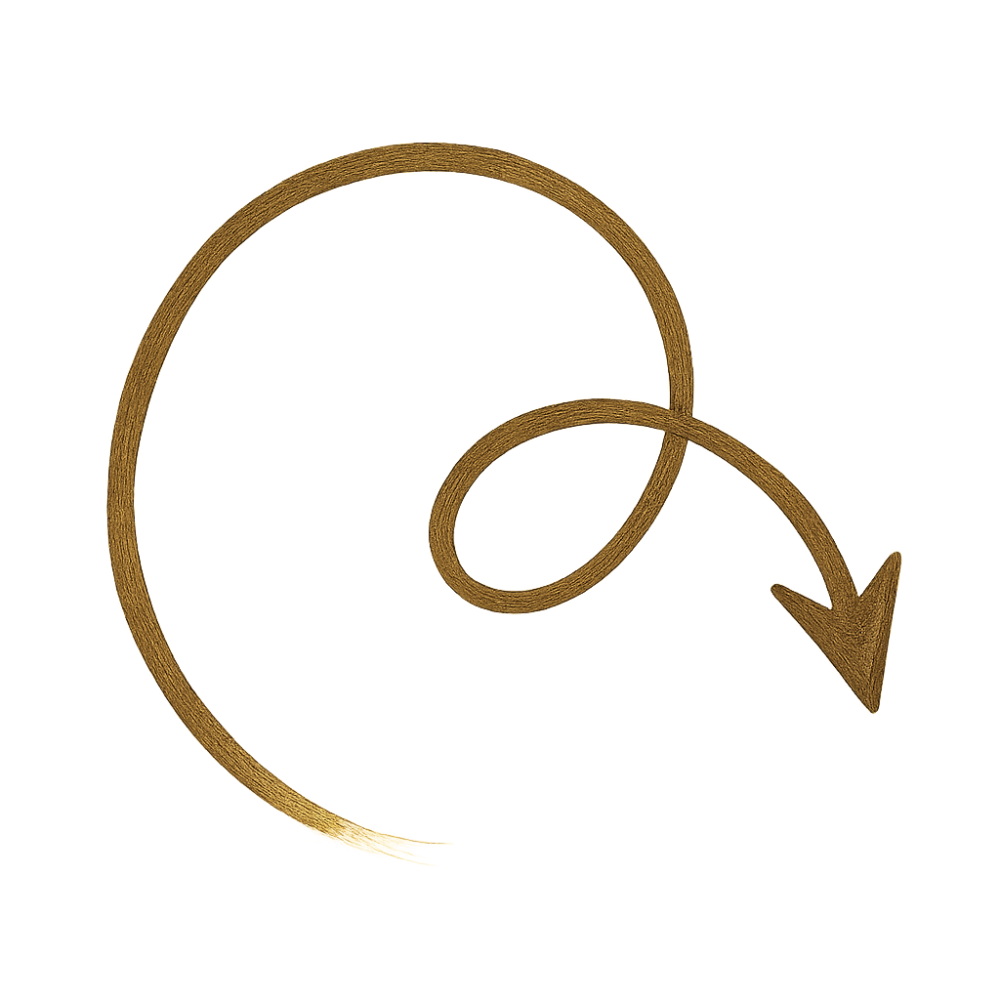
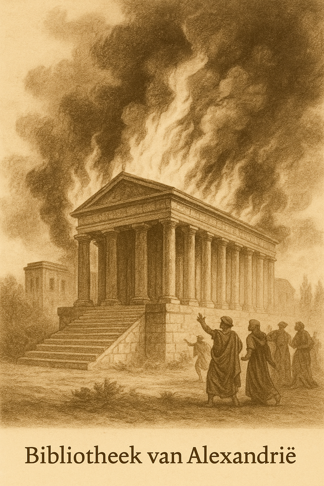

Zuid-Amerika
Betreed het museum
Reis door de tijd. Ontdek kunst, verhalen en werelden in beweging.
Vandaag in de geschiedenis



Reis door de tijd. Ontdek kunst, verhalen en werelden in beweging.
Vandaag in de geschiedenis

